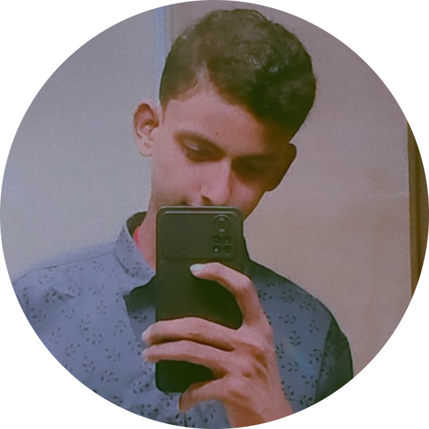

Hi, my name is Saurabh
Web Developer | Designer | Frontend Developer
Web Developer | Designer | Frontend Developer
Hi, I'm Saurabh, a passionate web developer with a knack for creating dynamic and responsive websites. With a background in computer science and a deep love for coding, I've honed my skills in HTML, CSS, JavaScript, and various web development frameworks. My journey in web development started when I realized the immense potential of the web in solving real-world problems and connecting people globally.
Over the past few years, I've worked on numerous projects ranging from small business websites to complex web applications. My expertise lies in developing clean, efficient, and scalable code that ensures a seamless user experience. I enjoy tackling new challenges and constantly strive to learn and adapt to the ever-evolving tech landscape.
In addition to my technical skills, I value effective communication, teamwork, and a user-centric approach to development. I believe that great websites are built not just with code, but with a deep understanding of the users they serve.
When I'm not coding, you can find me exploring the latest tech trends, contributing to open source projects, or enjoying a good book.
Let's create something amazing together! :
Current Time (UTC):
Current Day of the Week: